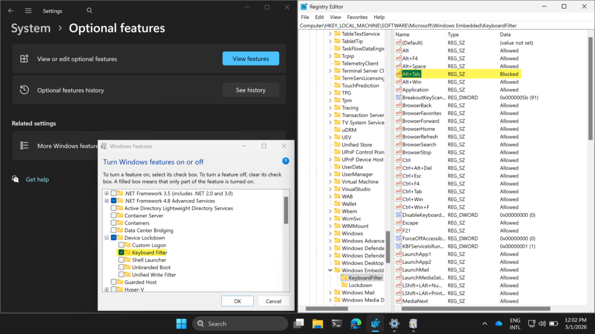

This week is not about something new. Not even close actually. This week is all about further locking down specific types of Windows devices, such as shared devices, kiosk devices, or even just actual locked down devices, by suppressing specific key combinations. There can be many scenarios on those types of devices that might require preventing users from using specific key combinations. That can be useful for preventing users from getting out of the locked down experience. And that should help with the device integrity and preventing unwanted access to the environment. There are actually multiple methods to actually achieve that configuration, and the best part is that Windows already contains one of those methods. As a part of the Windows Embedded experience, Windows contains the Keyboard Filter feature. That Keyboard Filter feature can be used to suppress specific unwanted key combinations, and it works with physical keyboards, the Windows on-screen keyboard, and the touch keyboard. This post will provide a closer look at the configuration, and the user experience (mainly verifying the configuration).
Note: The Keyboard Filter is not supported in a remote desktop session.
Configuring the Keyboard Filter
When looking at the configuration of the Keyboard Filter, it starts with enabling the Keyboard Filter feature, followed with configuring the specific key combinations. The easiest way to achieve that is by using PowerShell. The main challenge, however, will be the deployment of the configuration. Microsoft Intune is the obvious choice on this blog. Depending on the number of different configuration it could be smart to deploy the configuration in two separate parts, in which the first part enables the feature and the second part configures the key combinations. The easiest for that sequence would be to create Win32 apps, in which the configuration of the key combinations depends on the enablement of the feature. That doesn’t, however, take away the main challenge, as the enablement of the Keyboard Filter feature requires a restart. And that makes it challenging during Windows Autopilot. Addressing that challenge will differ per organization.
Enabling the Keyboard Filter
The first part would be enabling the Keyboard Filter feature. That can be achieved pretty straightforward by using a short PowerShell script that enables that specific features, as shown in the example snippet below.
Enable-WindowsOptionalFeature -Online -FeatureName Client-KeyboardFilter -All -NoRestartThat example snippet enables the Keyboard Filter feature and suppresses the restart for more control. That restart, however, is needed before it will actually be possible to configure the different key combinations. When using a Win32 app to enable the feature, the Get-WindowsOptionalFeature cmdlet could be used for eventually detecting the installation.
Blocking specific key combinations
The second part would be configuring the specific key combinations. That can also be achieved by using a short PowerShell script, but is not that straightforward. That would still require some old-school WMI knowledge. The WEKF_PredefinedKey class can be used to find the instance of the predefined key combination and to enable it. An example to enable a predefined key combination is shown in the example snippet below.
$CommonParams = @{"namespace"="root\standardcimv2\embedded"}
$CommonParams += $PSBoundParameters
function Enable-Predefined-Key($Id) {
$predefined = Get-WMIObject -class WEKF_PredefinedKey @CommonParams |
where {
$_.Id -eq "$Id"
};
if ($predefined) {
$predefined.Enabled = 1;
$predefined.Put() | Out-Null;
Write-Host Enabled $Id
}
else {
Write-Error "$Id is not a valid predefined key"
}
}
Enable-Predefined-Key "Alt+Tab"Note: This is a snippet coming from the examples provided in the Microsoft Learn docs.
That example snippet enables the Alt + Tab key combination. In this case, however, enabling that key combination actually means that the key combination will be blocked. When using a Win32 app to configure the key combinations, the KeyboardFilter registry key at HKLM\SOFTWARE\Microsoft\Windows Embedded\ could be used for eventually detecting the configuration. That registry key contains values for the different predefined key combinations.
Experiencing the Keyboard Filter configuration
When the configuration is in place, it is pretty straightforward to experience the behavior. Mainly because the configuration will be directly active after blocking specific key combinations. It is just pretty challenging to show in a single screenshot. When using the example configuration, the device will need a restart after enabling the Keyboard Filter feature. After that restart, the Keyboard Filter feature will be active and the key combinations can be configured. That is all shown below in Figure 2. The registry provides the easiest overview of the enabled key combinations. As mentioned, when a key combination is enabled, it actually means that the key combination is blocked. In this specific case, the Alt + Tab key combination is blocked. When trying that key combination, after the configuration, the device will no longer respond.
{kind=link}

More information
For more information about locking down Windows devices using Keyboard Filters, refer to the following docs.
Discover more from All about Microsoft Intune
Subscribe to get the latest posts sent to your email.